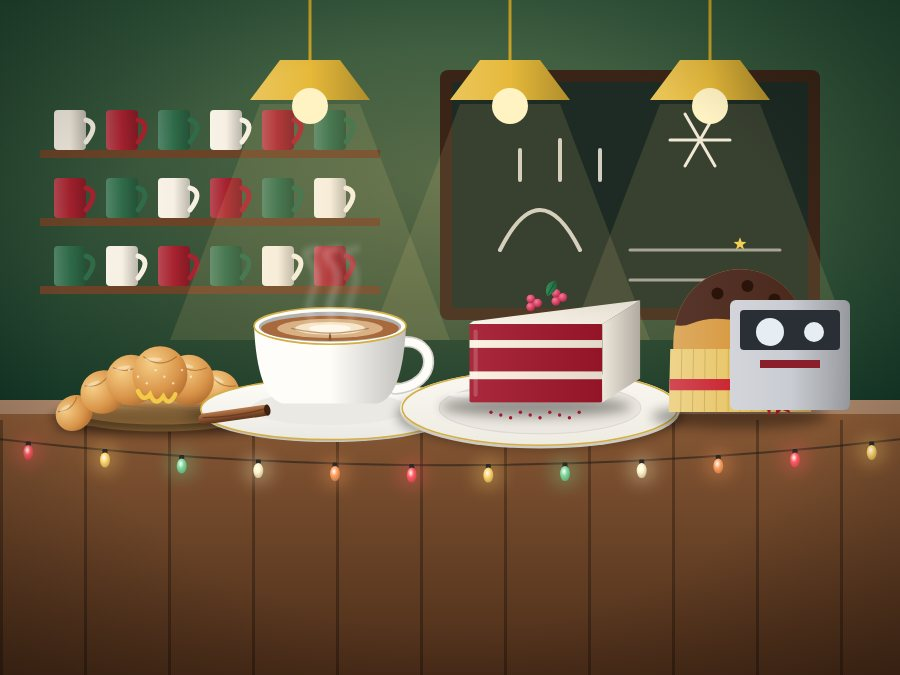

Missão
Oferecer produtos saborosos e experiências acolhedoras em cada visita.
NOSSA ESSÊNCIA
Mais do que café: momentos para guardar.

A Vithiana Coffee nasceu de um sonho: criar um cantinho acolhedor onde o aroma do café, os doces artesanais e a alegria de estar junto transformassem dias comuns em lembranças especiais. Nossa edição natalina celebra os pequenos gestos, a generosidade e o prazer de compartilhar.
A Vithiana Coffee é uma cafeteria fictícia, criada para o projeto de Desenvolvimento Web do Colégio UNASP. A história, o endereço e os produtos são imaginários.
Oferecer produtos saborosos e experiências acolhedoras em cada visita.
Ser lembrada como uma cafeteria criativa, cuidadosa e cheia de personalidade.
Carinho, qualidade, respeito, criatividade e união.
NOSSA JORNADA
Tudo começou com a vontade de criar um cantinho onde o aroma do café aproximasse as pessoas.
As primeiras receitas nasceram em cozinhas de família, com ingredientes simples e muito afeto.
O pequeno café ganhou nome, balcão e uma clientela que virou amiga.
Hoje o cardápio reúne cafés, bebidas, doces e salgados pensados para celebrar a época mais afetuosa do ano.
QUEM FAZ ACONTECER